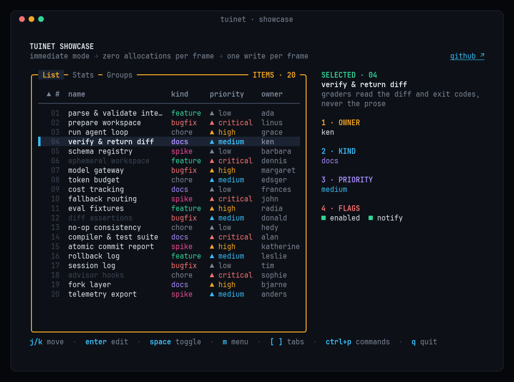
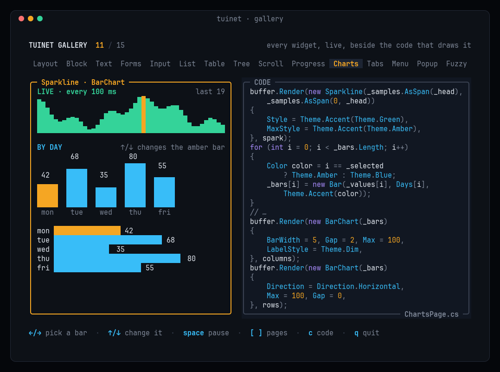

TUI.NET
Immediate-mode terminal UIs for .NET, built for speed.
Redraw everything every frame and let TUI.NET send only what changed: zero allocations per frame, one write
per frame, Native AOT. Your app owns its state and draws it into a cell buffer each frame; there is no widget tree
to keep in sync.


| Page | What's in it |
|---|---|
| Getting started | Install, a complete program, the frame loop, Terminal.Run and IApp, the samples |
| Layout and styling | Constraint layout, colors and attributes, mixed-style text and markup, custom widgets |
| Widgets | Lists, tables, trees, scrollbars, forms, text areas, popups, tabs, menus, the command palette, progress, charts |
| Input and the terminal | Keys, mouse and paste, background work, title, clipboard, cursor shapes, hyperlinks, suspend, inline mode |
| Testing | TestTerminal, styled snapshots, screen assertions, bytes on the wire |
| Performance | Frame costs, how the renderer saves bytes, allocation rules, comparisons |
| API reference | Every public type and member, from the XML docs |
The source, issues and changelog are on GitHub.